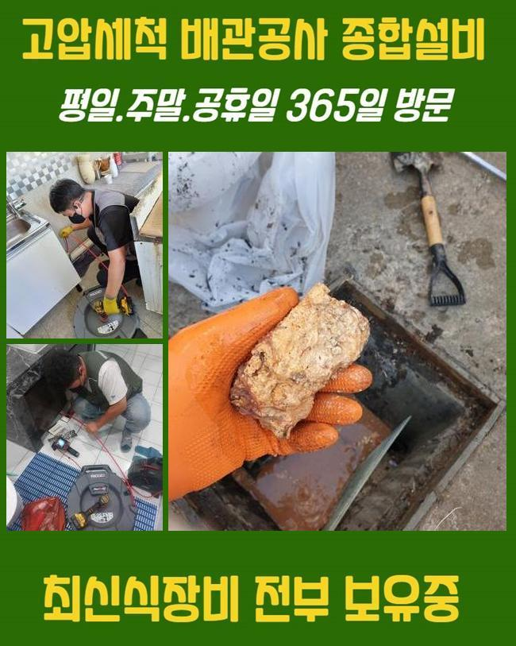
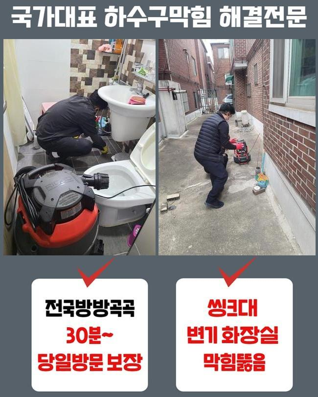
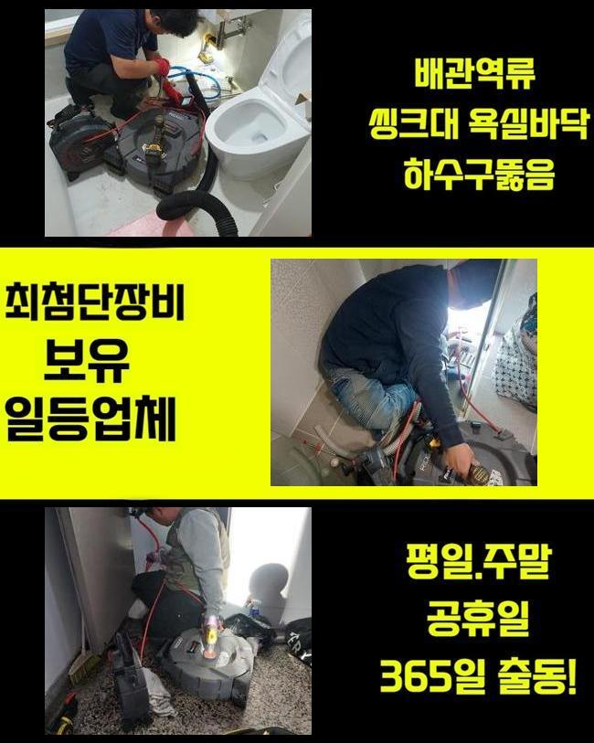
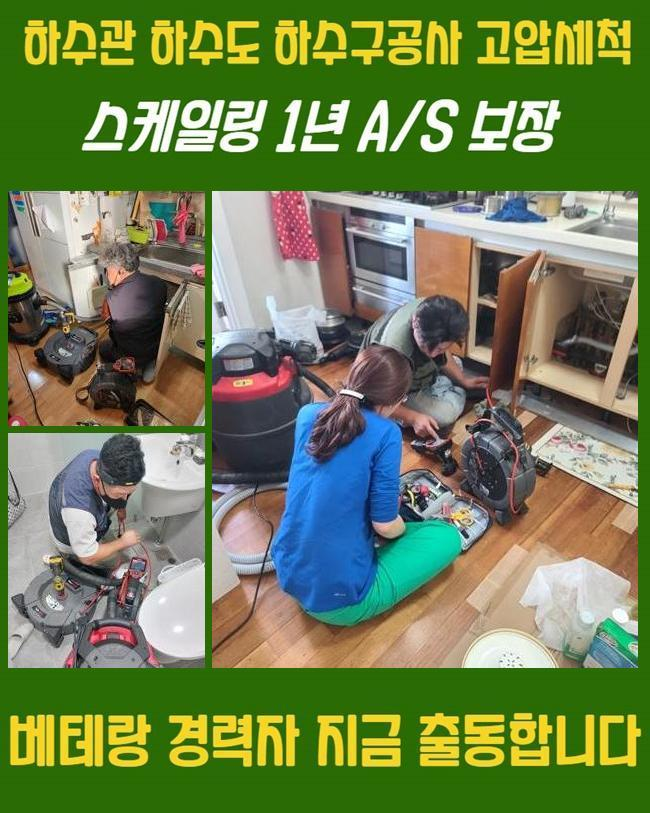
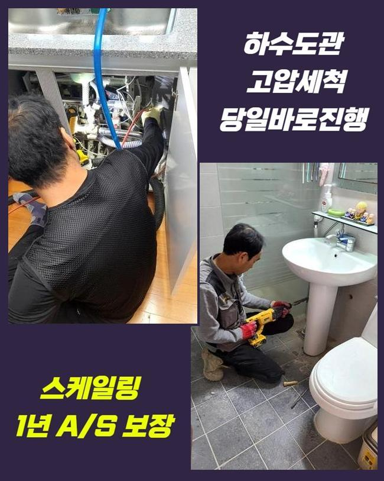
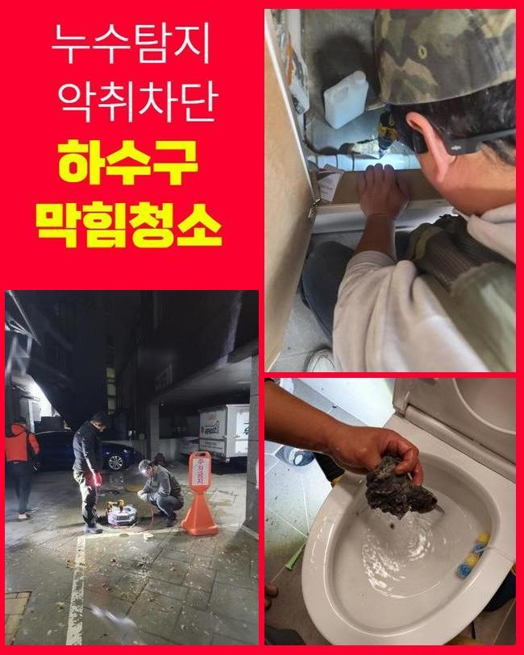
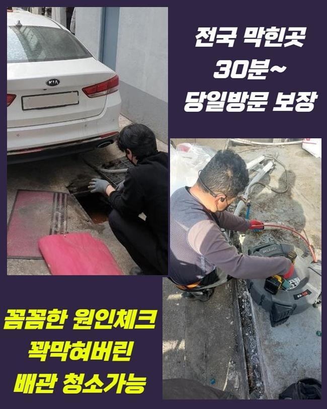

🏠 안양 호계동하수도막힘 귀인동 하수구청소 부속수리
안양 호계동 하수구막힘 전문 시공 후기

📋 작업 개요
- 위치: 안양 호계동, 호계동, 안양
- 서비스 유형: 하수구막힘, 배관막힘, 역류해결, 뚫는업체, 배관청소, 고압세척, 설비공사
- 작업 일시: 2025. 1. 30. 10:48
- 업체명: 하수구수사대 (010-5615-2118)
🔍 문제 상황
안양 호계동하수도막힘 귀인동 하수구청소 부속수리
쉼의 공간이 되어야할 주거지에서 때때로 발발하는 불편이 있어요
대표로 배수구막힘을 설명드리고자 해요
물막힘이 생겨나면 고약한 냄새가 올라올뿐만 아니라 일상생활의 스트레스를 가중하게 만들죠
배관막힘으로 욕실사용도 어려워지고 역류까지 발발한다면 더욱더 사태는 악화일로로 가게되겠죠
이번에는 투룸에서 관로막힘이 발발해 여러가지의 장비류를 적용해서 처리한 부분을 설명드릴게요
고객께선 집안내의 세탁기기에서 물막힘이 일어났다며 저희측으로 문의하셨는데요
작업차 안에 샤프트분쇄기와 석션장비 및 내시경설비를 갖추고 의뢰인의 댁으로 이동하였습니다
방문하였더니 고린내가 가득차 있었으며 찌꺼기들이 역류로 흩어진 모습또한 목도하게 되었어요
세탁기능을 활용하여 물을 내려보려 했지만 되레 넘치는 정황이 나타났다 설명하셨죠
간단하게 물만 역류된것이 아니고 다양한 이물들까지 올라오는 상황이었답니다
어떤 설비에서는 개수대와 다용도실의 배관이 이어진 경우도 있습니다
그러한 내용또한 점검해보기로 했죠
정황을 명확히 파악하려 고객님에게 욕실부근이나 또다른 관로에 막힘이 일어났거나 역류상황은 없었는가 여쭈어보았죠

🔎 원인 분석
💡 전문가 진단: 정밀 진단 장비를 사용하여 슬러지의 고착 여부를 판명하고 타격/세척 작업을 실시했습니다.
그저께 물막힘 때문에 인터넷에서 구매한 구연산과 세제를 부어본적이 있다고 하셨죠
그것을 근거로 개수대쪽의 하수관에 막힘상황의 동기가 있을거라 추정했답니다
저희측이 내방드린 현장의 트러블을 처리하려 연유를 찾아내기로 하였답니다
배관카메라를 활용하여 파이프 내측을 조사하기로 한거죠
안쪽이 혼잡할땐 방수성능이 있는 고속청소기로 하수관의 오물들을 처리하게 됩니다
이런 과정을 바탕으로 작업시간을 줄여나갈 수 있죠
세정중 다양한 찌꺼기들과 잔재들이 흡입되었는데요
단 이것만으로는 본질적인 정체이유가 어떠한 것인지에 대해 간파해내지는 못했답니다
일차로 진행한 셕션기기로 소제할수 없는것들이 상당하였기에 즉각적으로 내시경cctv를 투입하여서 물막힘이 생겨난 관로를 검사해보기로 했죠
상태를 자세하게 조사하니 해변가에서 자주보는 모래 성분이었답니다
세탁과정에서 누출된 정황일 공산이 컸어요
의뢰인분에게 휴가일정이 근래에 있으셨나 물어보았더니 동해안 쪽의 바닷가에서 캠핑을 하셨다고 말해주셨어요
우선적으로 큼지막한 찌꺼기들을 정리하고 보다 구체적으로 뚫음시공을 속행하기로 했죠
그리고나서 하수도 곳곳을 소제가능한 기기들을 쓰기로 결정했죠

🔧 작업 과정
내시경cctv를 적용하는 것은 막힘의 사유를 분명히 파악하고 물막힘을 해소하려는 목적인데요
흡입기계로 세척을 끝내고 가는 호스줄에 결속된 내시경을 사용하여 관로 안을 조사해 보았어요
배관 곳곳을 점검했고 실체적으로 말썽이된 요소를 발견해낼수 있던거죠
이렇듯 물막힘과 역류는 여러종류의 변수들에 의해서 생길수 있으며 해결책이 간단한것도 아니라고 말씀드려요
그렇기때문에 전문적인 기기들을 토대로 시공을 해나가야 원만하게 마무리지을수가 있죠
만일에 대충대충 정황을 정리하려든다면 한층더 정체가 증가할수 있단 것을 꼭 기억해주세요
배수관 군데군데를 배관내시경으로 진단하였어요
배수관의 사이즈는 생각보다 긴편이고 모양도 다양해서 직시해서 검증하기에는 어려움이 있죠
이러한 상황에서는 가느다란 내시경기기가 큰 임무를 할수가 있답니다
내시경배관카메라로 내측을 자세하게 파악해보니 불규칙한 석회성분과 자그마한 알갱이들이 뒤엉켜있는 모습이었습니다
해당 찌꺼기들은 적체되기 쉬우며 단단하게 경화될수가 있어요
자그마한 성분들은 배수가 되어서 바깥으로 배출되겠으나 동시에 모래알들이 관로로 투입된다면 해당 현장처럼 막힘이 생길수 있는거죠
게다가 그상황이 계속된다면 배수관에 단단한 물질층이 생겨날수도 있는거고요
이물의 크기와 양을 기준으로 사용되는 장비들이 달라요
가령 손수건 등의 부피가 큰 물질이 있다면 쇠갈고리 등을 투입하여 꺼낸다음에 흡입기계로 배수관 내측을 청소해야 됩니다
혹시라도 이러한 과정을 생략하고 플렉스샤프트작업을 곧장 하면 배관안이 더욱더 나빠지기 쉽습니다
이물들이 특정한 공간에 다량 분포되어 있을땐 인위적으로 파쇄하는 업무를 진행하게 됩니다
여긴 작은 모래알과 엉켜있었기 때문에 샤프트장비를 동원하여 소제한다음에 뚫음시공을 진행한거죠
이번에 내방드린 곳에서는 전체 이물들을 세정한다음 배관카메라로 다시금 점검을 시행하였죠
이후 상존하는 물질들은 샤프트기기로 정결히 정비하고 곧바로 물을 내려 보았는데요
이상없이 속시원히 소멸되는걸 목도할수 있었죠
공사현장에서 토출된 지저분한 것들을 전부 정리해서 분리폐기하는걸로 공사를 끝내게 되었죠


✅ 작업 완료
위의 정체문제를 사전적으로 막기 위해서는 정기적으로 하수구 진단해보았고 세척을 해야합니다
주방시설의 배수설비에선 음식물이 중앙에 정체하여 역류증상까지 촉발하기도 해요
해당 상황에 직면하면 머뭇거리지 마시고 즉시 전문업체를 찾으시는게 합당합니다
보통사람들이 처치할수있는 구간은 근본적인 처방에 다다르기 힘들고 막힘상황이 한층 안좋게되는 경우도 빈번하기 때문이죠
배관업체의 클리닝과정은 간단하게 삶을 정상적으로 만들어주는것 뿐만아니라 위생적인 안전성을 보존하는데도 긴요한 기능을 수행하죠
그리고 해당 사태가 계속 방치되면 인접세대에도 곤란한 상황을 야기할수 있다는것을 기억해두시길 당부드려요




⚠️ 하수구 배관 막힘 예방 및 관리 가이드
- ✅ 머리카락, 비닐, 물티슈 등 물에 분해되지 않는 이물질은 하수구 유입을 절대 금지해 주세요.
- ✅ 하수구 거름망을 씌우고 모여진 이물질은 주기적으로 쓰레기통에 바로 비워주셔야 합니다.
- ✅ 배관 노후가 심할 경우 이물질이 더 쉽게 걸리므로 주기적인 배관 세척(고압세척 등)을 권장합니다.
- ✅ 작업 후 1년 이내 재발 시 하수구수사대에서 무상 A/S 보증 서비스를 제공합니다.
💡 핵심 정리
- 확실한 장비 작업(내시경 점검 및 샤프트 스케일링)으로 원인을 뿌리 뽑습니다.
- 작업 후 1년 이내에 동일한 부위 재발 시 100% 무상 A/S 서비스를 보장합니다.
- 서울 · 경기 · 인천 전 지역에 24시간 언제든 긴급 출동할 수 있도록 항시 대기 중입니다.
❓ 자주 묻는 질문 (FAQ)
🚨 안양 호계동 하수구막힘 문제로 고민이신가요?
정확한 원인 진단과 확실한 시공으로 재발 없는 해결을 약속드립니다.
24시간 긴급 출동 | 서울 · 경기 · 인천 전지역 | 1년 내 재발 시 무상 A/S